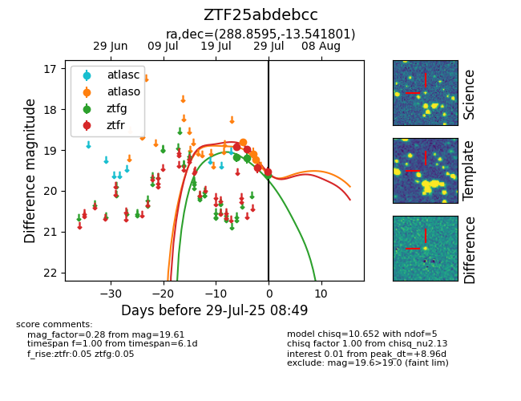

Target ZTF25abdebcc at 2025-07-29 08:49, see:
FINK: fink-portal.org/ZTF25abdebcc
Lasair: lasair-ztf.lsst.ac.uk/objects/ZTF25abdebcc
ALeRCE: alerce.online/object/ZTF25abdebcc
alt names
ZTF25abdebcc (ztf,fink)
coordinates:
equatorial (ra, dec) = (288.8595,-13.54180)
galactic (l, b) = (23.4171,-11.37413)
photometry
last atlaso=19.23, ztfg=19.61, ztfr=19.53
3 atlaso, 3 ztfg, 4 ztfr detections
